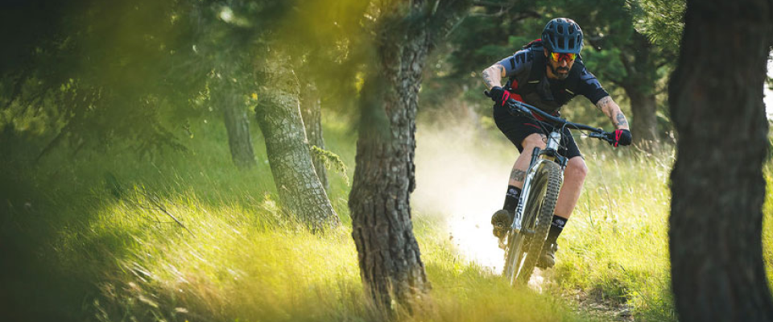
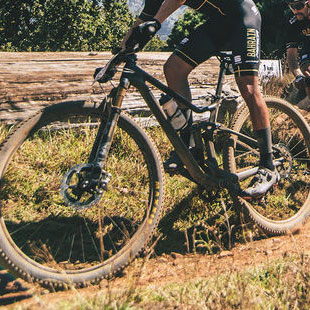
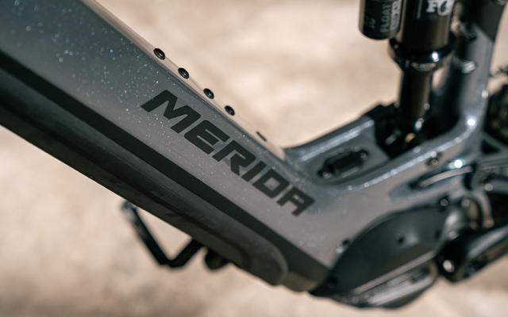

'오리지널' e원-식스티는 뛰어난 품질을 바탕으로 한 혁신과 압도적인
성능을 보여줌으로써 가장 많은 상을 수상한 자전거의 영예를 얻으며
지난 3년간 엔듀로 eMTB 시장에서 최상위권의 자리를 유지해 왔습니다.
2020 시즌에 맞춰, 우리는 '구' e원-식스티에 작별을 고하고, 새로운
e원-식스티를 맞이하게 되었습니다 - 역동성과 디자인을 위한 새로운
메리다의 벤치마크인 e원-식스티를 만나보세요.


Trail and enduro riding
지오메트리와 서스펜션 트래블 및 제품 사양, 이 모든 것이 트레일
라이딩에 완벽하게 설계되었습니다. 이만하면 어떤 코스에서도
사랑받을 수밖에 없겠죠? 엔듀로와 트레일 라이딩 능력을 갖추고 있는
것 외에도 e원-식스티는 매우 유능한 SUV 스타일의
자전거입니다. 서스펜션 트래블 덕분에 매우 편안한 자세로 라이딩이
가능하며, '일반' 산악자전거보다 훨씬 큰 자신감을 라이더에게
부여합니다.
e원-식스티의 전체 카본 제품군은 시마노의 새로운 EP8 모터로
구동됩니다. EP8의 최대 전력 출력의 개선은 당신이 더 오래, 더 열심히
라이딩을 즐길 수 있게 하였으며, 점점 더 조용하고, 작아짐으로써, 약
36%의 저항 감소를 달성하여 컷아웃 속도로 순항하는 더 원활하게
만들었습니다.

DYNAMIC AND DESIGN
강렬하면서도 단아하게 이어진 선은 드롭아웃에서부터 헤드 튜브까지
이어가게 만듭니다. 카본 프레임과 매끄럽게 통합된 단조 알루미늄
부품들이 조화롭게 융합되어 있는 써모 게이트, 밀링 공정을 통해
드러난 가로줄은 헤드 튜브 쪽의 시각적 정점으로 새로운 e원-식스티의
독창성을 강조합니다.
탑 튜브 상부의 스위치는 라이더가 쉽게 시스템을
작동할 수 있도록 하여 자전거의 전원을 켜는데 1초의 시간도 더
낭비하지 않도록 라이더의 페달링을 부추깁니다.